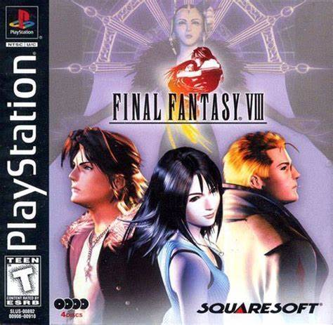

Final Fantasy VIII

Welcome to the fanwebsite for the Japanese role-playing game, Final
Fantasy
VIII (8), the eighth installment in the Final Fantasy series.
Final Fantasy VIII[b] is a 1999 role-playing video game developed and published by Square for
the
PlayStation console. It is the eighth main installment in the Final Fantasy series.
Development began in 1997, during the English localization of Final Fantasy VII. The game builds
on
the visual changes brought to the series by VII, including the use of 3D graphics and pre-rendered
backgrounds, while also departing from many Final Fantasy traditions.
It is the first Final Fantasy to
use realistically proportioned characters consistently, feature a vocal piece as its theme music and
forgo the use of magic points for spellcasting.
Final Fantasy VIII was well received by critics. The game was a commercial success, grossing
$151
million in its first day of release in Japan, and more than $50 million during its first 13 weeks in
North America, making it the fastest-selling Final Fantasy title until Final Fantasy XIII, a
multi-platform release.
A Windows port followed in 2000, with the addition of the Chocobo World
minigame.
Final Fantasy VIII was re-released worldwide as a PSOne Classic on the PlayStation Store in
2009,
for PlayStation 3 and PlayStation Portable, with support for PlayStation Vita in 2012.
It was re-released via Steam in 2013. By August 2019, it had sold more than 9.6 million copies
worldwide.
Remake Trailer
Available at